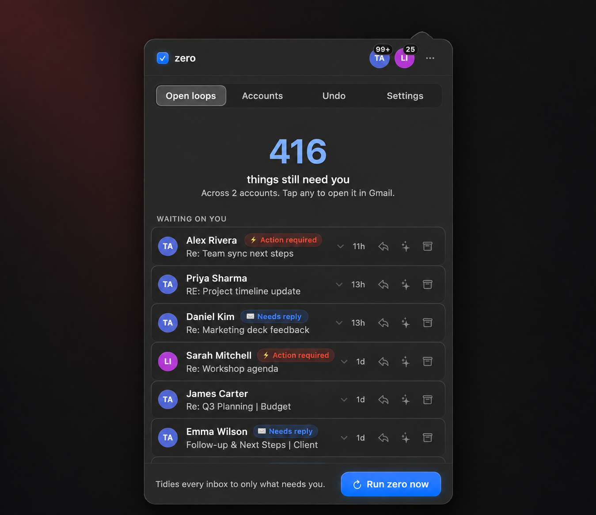

Keep the mail that needs you.
zero is a Mac menu-bar app. It checks your Gmail, keeps the conversations that still need you, and archives the rest. Archived mail stays in Gmail, and you can restore it.
- Needs
- Apple Silicon Mac, macOS 26+, Gmail
- Sorting
- Your own TypeSafe Jev key. TypeSafe bills the usage.
- Cost
- zero is free and open source.

What stays. What's set aside.
zero reads each conversation against plain-language rules you can edit in Settings. If it still needs your reply or action, it stays in your Inbox. Everything else is archived.
It can be wrong. Review your first few runs.
- Stays
- Stays
- Stays
- Set aside
- Set aside
- Set aside
- Set aside
Illustration of zero's default rules. Not a live inbox, and not a guarantee: the AI can sort a message wrongly. In the app, what stays appears under Waiting on you in Open loops.
Nothing is deleted.
Archiving removes Gmail's Inbox label and adds a dated recovery label. The mail stays in All Mail, searchable as usual.
- Restore a runOpen zero's Undo view and put a day's changes back.
- Find it in GmailSearch the dated label, or look in All Mail. Archived messages remain in Gmail.
- Change the rulesEdit what counts as "needs you" in Settings → Rules.
Before you install
Everything zero needs, sends and costs, in one place.